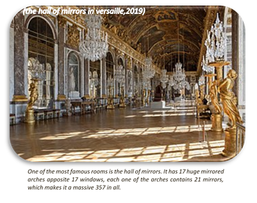
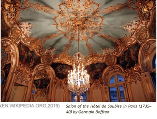

GENERAL DESCRIPTION AND TIMEFRAME
Baroque is a highly ornate and often extravagant style of architecture, music, dance, painting, sculpture and other arts that flourished in Europe from the early 17th until the mid-18th century. It followed Renaissance art and Mannerism and preceded the Rococo (in the past often referred to as "late Baroque") and Neoclassical styles.
The Baroque style used contrast, movement, exuberant detail, deep color, grandeur and surprise to achieve a sense of awe. The style began at the start of the 17th century in Rome, then spread rapidly to France, northern Italy, Spain and Portugal, then to Austria and southern Germany. By the 1730s, it had evolved into an even more flamboyant style, called rocaille or Rococo, which appeared in France and Central Europe until the mid to late 18th century.
Baroque developed in the Counter-Reformation period, when the Catholic Church needed to reassert its waning influence across Europe in the face of the Protestant Reformation. One way of attracting new followers was to create overtly emotional and sensory displays in art and architecture. Church architecture appealed as much to the emotions as to the intellect of the faithful, attempting to persuade them into unconditional loyalty to the church. Approaching and entering a church became a symbolic, sensorial and mysterious experience.
While initially finding form in church and cathedral design, the style was later used as a visual demonstration of absolutist regimes in the form of elaborate royal palaces. The late Baroque style is often referred to as Rococo or, in Spain and Spanish America, as Churrigueresque. (Study.com, 2019)
MAIN FEATURES AND CHARACTERISTICS
Baroque architecture is characterized by dynamic designs and complex architectural plan forms; intended to heighten feelings of motion and sensuality, and frequently based on the oval. There is often a mixture of the repetition, break-up and distortion of Renaissance classical motifs. Common elements include:
- Grandeur.
- Contrast.
- Curves and teists.
- Rich surface treatment.
- Gilded statuary.
- Bright colors.
- Vividly painted ceilings.
- Fragmented or deliberately incomplete elements.
- Large-scale frescoes.
- Dramatic central projections on an external façade.
- Use of plaster or stucco, marble or faux finishing.
- Illusory effects such as trompe l’oeil.
- Pear-shaped domes (more common in Eastern Europe baroque).
The most notable practitioners of the baroque style in Italy included Gian Lorenzo Bernini, Carlo Maderno, and Francesco Borromini. Developing later, in central Europe the most notable architect was Johann Bernhard Fischer von Erlach. In Britain, baroque was adopted by Christopher Wren and Nicolas Hawksmoor. (Wiki, 2019)
ARCHITECTURE
Baroque architecture is a style that emerged in Italy in the late-16th century. It was a more theatrical version of Renaissance architecture, with dramatic lighting and color, illusory effects such as trompe l’oeil, and designs that played games with architectural features, sometimes leaving them incomplete.
Its buildings typically include central towers, domes, portico or other central projections in the main façade. As Baroque architecture coincided with European colonialism, it can be seen throughout much of the world; and in some regions, notably Germany and colonial South America, it lasted until the 18th century.
INTERIORS AND FURNITURE
The interior of the Baroque style becomes more and more popular from day to day. You can plunge into the interior of the palace atmosphere using:
- Luxurious linens (brocade, silk, velvet) and rich finishing (tapestries, stucco on the walls and ceiling). Baroque décor seek pomp and demonstrative grandeur;
- Picturesque decoration of the ceiling and the walls: you can order a Baroque walls painting;
- Sculptures and graceful statues, often depicting children, musicians, and beautiful women can decorate the interior. They can be ordered or found on the market if you don`t have one;
- Furniture, which would be decorated with exquisite carvings covered with gold or bronze, precious wood veneers, trimmed with mosaic and valuable metal, can make be ordered as an option.
Baroque furniture must necessarily have presentable and expensive look. It is characterized:
- Fabric upholstery.
- Lacquering and gilding.
- Curved legs.
- Sophisticated carving.
Tables and countertops in this style are often decorated with mosaics, and the back seats of armchairs are folded back. Baroque is characterized by such furniture as ottoman chairs, cupboards, chests of drawers and double closets.
The color of the furniture is often the same as the color of walls but can be a contrasting. For example, furniture, upholstered with burgundy cloth looks nicely, against light beige walls and gilded elements.
PRINCIPAL DESIGNERS
| Name | Year |
|---|---|
| Gian Lorenzo Bernini | 1898-1680 |
| Francesco Borromini | 1599-1667 |
| Pietro da Cortona | 1596-1669 |
| Louis Le Vau | 1612-1670 |